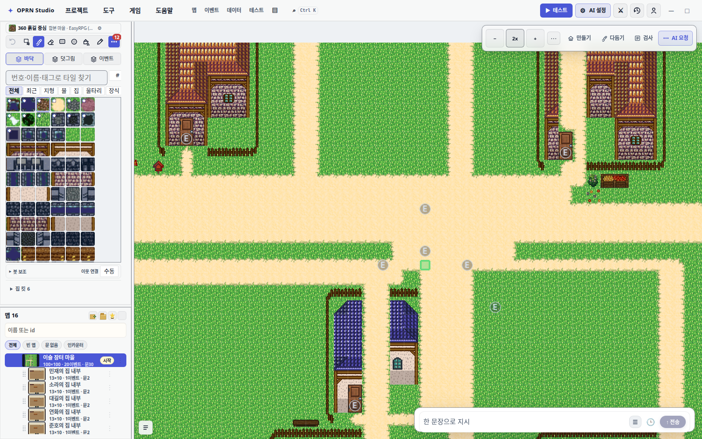
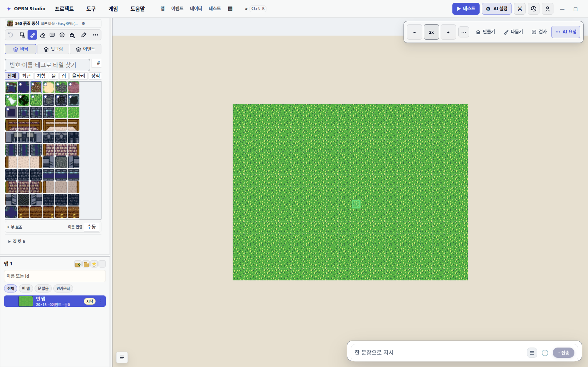
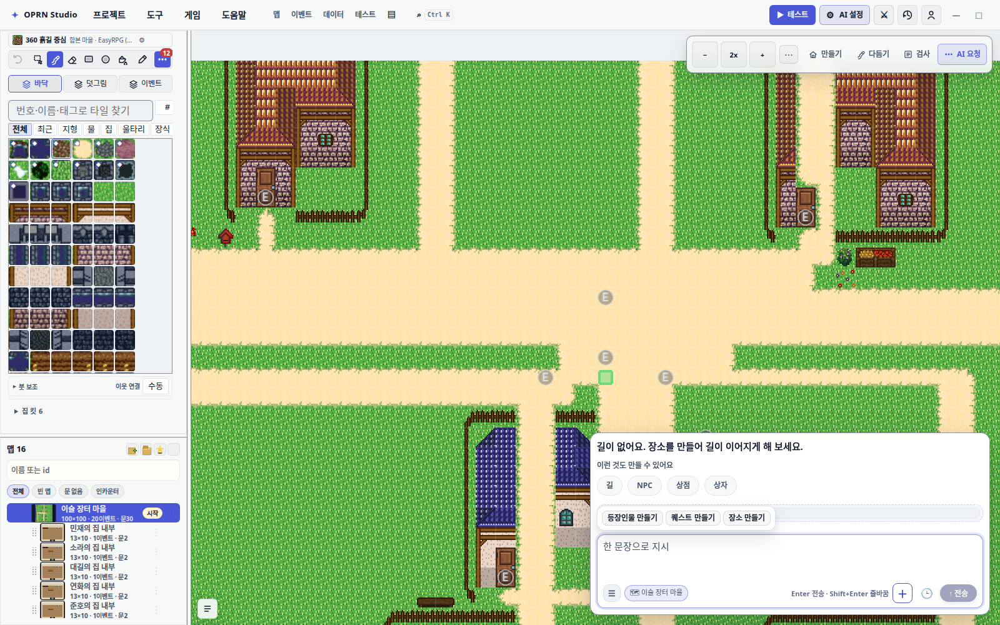
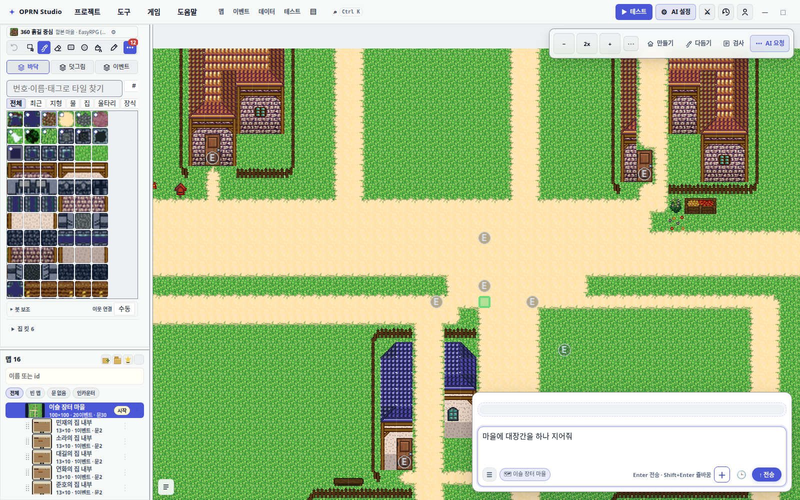
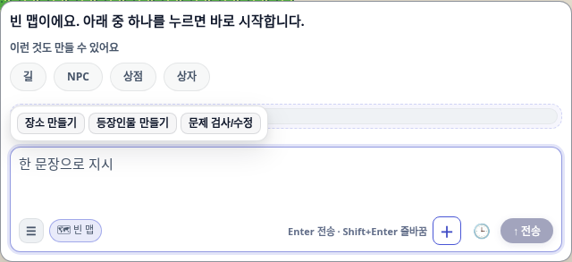
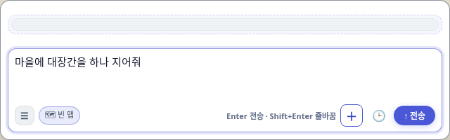
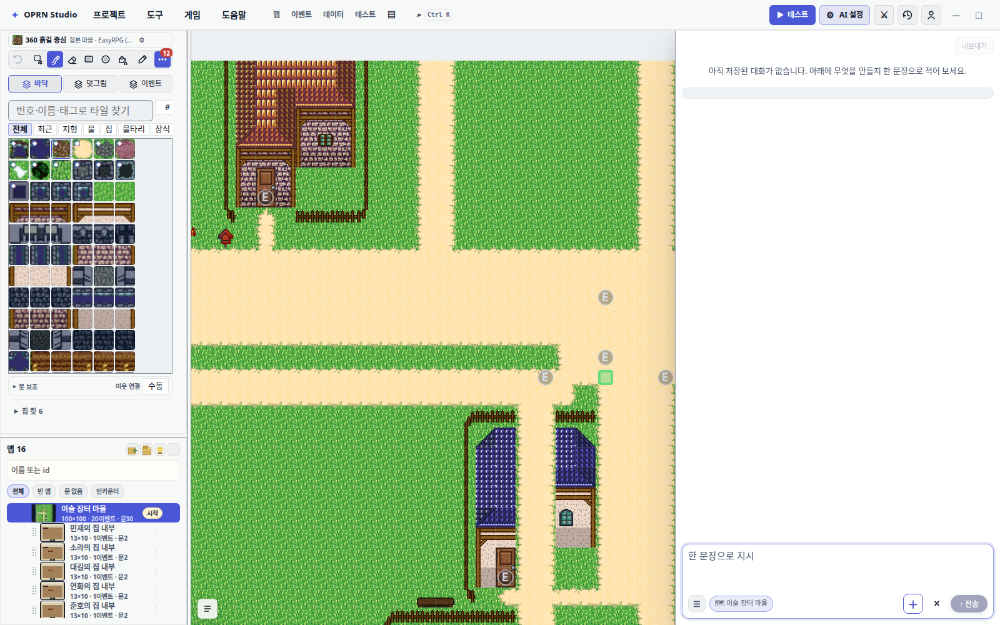
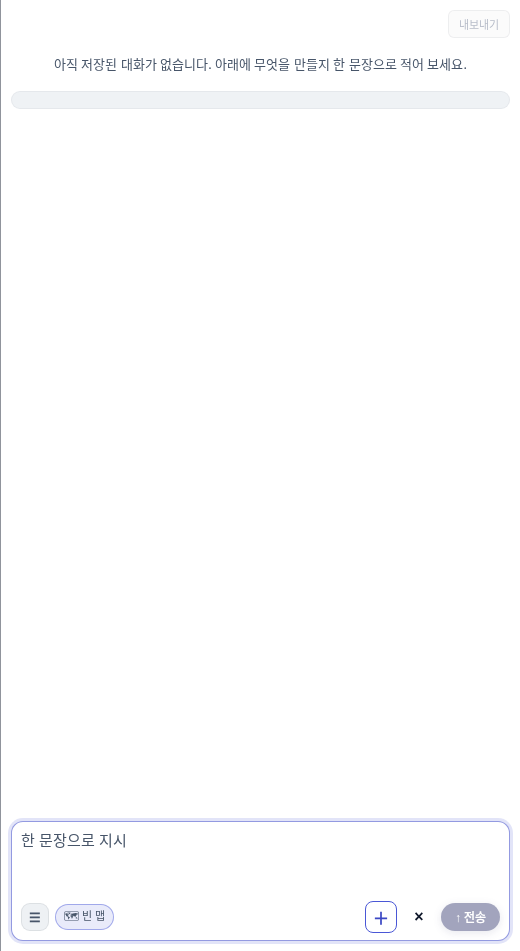

조수 띠 재편 — 구현 보고서
편집기 조수 UI 를 캔버스 우하단에 떠 있는 띠 하나로 바꿨다. 배치 3종(유리·사이드·플로트) × 대기화면 3종 × 접힘이라는 조합을 없애고, 상태를 한 축으로 폈다. 이 문서는 무엇을 어떻게 재서 통과라고 판정했는지를 남긴다.
1. 왜 바꿨나 — 실제 원인은 "소유자 부재"였다
구 구현은 position / inset / width / height 네 속성을 CSS 22장에서 도크별로 다시 선언했다. 그래서 "어느 파일이 이기는가" 가 실제 배치를 정하고 있었다. 증상은 두 가지로 나왔다.
- 600px 공백. 띠가
height: 100%로 빈 로그를 펼친 결과였다. 표면을 몇 번 바꿨지만 원인은 그대로 남아 살아 있었다(§4 에서 세 자리를 잡는다). - 배타 선택자 경쟁.
:not(.is-history-open):not(.is-studio):not(.is-collapsed):not(.chat-dock-side)…를 파일마다 다시 쓰다가 어긋났다.
처방은 소유권을 한 곳으로 모으는 것이다. 이제 src/styles/database/assistant/shell.css 하나만 띠의 위치·크기를 갖는다. 상태는 다섯 개고 선택자로 서로 배타적이다.
| 상태 | 클래스 | 높이 | 비고 |
|---|---|---|---|
| 유휴 | (없음) | 56px | 입력 1줄. 나머지 슬롯은 문서에서 빠진다 |
| 자람 | is-risen | 내용만큼 ≤480px | 높이는 auto, 상한만 걸린다 |
| 전체 기록 | is-history-open | 100% | 우측 520px 전면 오버레이 |
| 턴 결과 | is-turn-{running,error,attention} | — | 좌상단 7px 점. 레이아웃을 차지하지 않는다 |
왜
height를 안 쓰나.height: 100%가 구 600px 공백의 원인이었다. 내용이 결정하는 높이에 상한만 걸고, 유휴 높이는:not(.is-risen):not(.is-history-open)에서 한 줄로 고정한다.position: absolute이므로 캔버스를 밀어내지 않아 줌·스크롤이 튀지 않는다.
2. 실측 — 상태 3종 × 맵 배경 2종
반투명 표면의 대비는 뒤가 무엇이냐에 달렸다. 단색 배경만 재면 통과가 무의미하므로 맵 배경 2종 위에서 잰다: 마을(타일이 다채롭다)과 빈 프로젝트(거의 단색). 뷰포트 1600×1000.
유휴 — 56px 한 줄


자람 — 내용만큼, 상한 480px




전체 기록 — 우측 520px 전면 오버레이


.ai-history-empty 안내문. 이것이 없어서 951px 흰 판이 열렸다(§4)3. 게이트 3종
게이트 1 · 기하 — scripts/check-strip-geometry.mjs (신규)
대비는 다른 스크립트가 본다. 이건 크기와 자리만 본다. 5번만 PNG 를 읽고 나머지는 metrics.json 의 실측 사각형으로 판정한다.
| 상태 | 사각형 | 앵커 R/B | 공백 밴드 | 판정 |
|---|---|---|---|---|
| village_idle | 640×56 @944,928 | 16/16 | 6px | OK |
| village_focus | 640×293 @944,692 | 16/16 | 15px | OK |
| village_risen | 640×200 @944,784 | 16/16 | 18px | OK |
| village_history | 520×951 @1080,49 | 0/0 | 709px (미판정) | OK |
| blank_idle | 640×56 @944,928 | 16/16 | 6px | OK |
| blank_focus | 640×293 @944,692 | 16/16 | 15px | OK |
| blank_risen | 640×200 @944,784 | 16/16 | 18px | OK |
| blank_history | 520×951 @1080,49 | 0/0 | 709px (미판정) | OK |
단정 5개: 유휴 56±2px · 자람 ≤480px · 우하단 앵커 16/16 · 좌측 레일(0~73px) 회피 · 연속 공백 밴드 ≤40px.
기록의 709px 밴드는 왜 판정하지 않나. 40px 상한은 띠의 계약이다 — 구 600px 공백은 띠가
height: 100%로 빈 로그를 펼친 결과였다. 전체 높이 아카이브 화면은 대화가 없으면 아래쪽이 비는 게 정상이고, 문제는 여백이 아니라 설명 없는 여백이다. 그래서 기록에는 대신 "비었으면 안내문이 실제 높이를 갖고 보이는가" 를 단정한다. 재기는 하고 출력만 하는 이유는, 지우면 "기록 밴드가 어떻게 변했나" 를 다음 사람이 다시 재야 하기 때문이다.
게이트 2 · 대비 — scripts/analyze-glass-contrast.mjs
| 상태 | backdrop-filter | 배경 다양도 | 측정 항목 |
|---|---|---|---|
| village_idle | none | 26 | 입력 플레이스홀더 17.85:1 · 전송 버튼 2.37:1 (면제) |
| village_focus | none | 25 | 안내문 17.85:1 · 예시 라벨 7.58:1 · 예시 칩 7.12:1 · 전송 2.37:1 (면제) |
| village_risen | none | 53 | 플레이스홀더 17.85:1 · 전송 버튼 5.46:1 |
| village_history | none | 17 | 플레이스홀더 17.85:1 · 전송 2.37:1 (면제) |
| blank_idle | none | 13 | 플레이스홀더 17.85:1 · 전송 2.37:1 (면제) |
| blank_focus | none | 25 | 안내문 17.85:1 · 예시 라벨 7.58:1 · 예시 칩 7.12:1 · 전송 2.37:1 (면제) |
| blank_risen | none | 31 | 플레이스홀더 17.85:1 · 전송 버튼 5.46:1 |
| blank_history | none | 17 | 플레이스홀더 17.85:1 · 전송 2.37:1 (면제) |
AA 실패 0건, 면제 6건. backdrop-filter 는 8 상태 전부 none(스펙 §2 금지 조항).
면제 6건은 거짓 양성을 고친 것이다. 전부 전송 버튼이 2.37:1 로 잡힌 것이었고, 원인은
.ai-chat-send:disabled { opacity: 0.45 }가rgb(74,87,214)를rgb(164,167,191)로 합성한 결과다. WCAG 1.4.3 은 비활성 컨트롤을 Incidental 로 면제한다. 분석기는 합성된 픽셀만 보므로disabled/aria-disabled신호를 계측기에서 같이 실어 보내 판정에서만 뺐다. 재는 것은 그대로 뒀다 — 지우면 활성 상태가 저대비로 망가지는 회귀를 놓친다. 실제로*_risen두 상태에서는 같은 버튼이 활성이 되어 5.46:1 로 판정된다.
게이트 3 · 계측기 — test/e2e/_assistant-glass-shots.spec.ts
도는 축을 도크 3종 → 상태 3종 × 맵 배경 2종으로 바꿨다. 편집기 캔버스가 WebGL 이라 getContext("2d") 가 null 을 돌려주므로(2026-08-28 실측: distinct = −1) 캔버스 픽셀을 JS 로 직접 읽을 수 없다. 그래서 DOM 조건으로만 게이트하고, "뒤가 비어 있지 않은가" 판정은 스크린샷 PNG 를 읽는 분석기가 맡는다.
4. 게이트가 실제로 잡은 결함 3건
셋 다 구 600px 공백이 표면만 바꿔 살아 있던 자리다. 밴드 검사가 951px 패널 안에서 377px 짜리 공백을 두 번 잡아낸 것이 시작이었다.
| # | 증상 | 원인 | 처방 |
|---|---|---|---|
| 1 | 전체 기록이 대화 없이 열리면 951px 짜리 말 없는 흰 판 | 빈 기록 안내문이 아예 없었다 | .ai-history-empty 추가. 가시성은 CSS 가 is-history-open + data-ai-conversation="empty" 로 정한다 — TS 가 hidden 을 직접 만지면 두 곳이 같은 상태를 들고 갈라진다 |
| 2 | 안내문과 컴포저 사이에 공백 | 빈 로그 마운트가 flex: 1 로 남는 높이를 다 먹었다 |
[data-ai-conversation="empty"] 에서 flex: 0 0 auto |
| 3 | 기록 패널 높이의 절반이 빈 통 | 기록을 열면 mountLog() 가 로그를 옮기므로 .ai-rising-overlay 의 유일한 자식이 비는데, 기반 규칙이 오버레이에도 flex: 1 1 auto 를 줬다 |
기록에서 오버레이를 문서에서 제외 |
고치는 중에 밴드가 나빠졌다(377 → 709px). 오버레이의
flex: 1을 없애자 두 공백이 하나로 합쳐졌기 때문이다. 되돌리는 대신 스크린샷을 읽어 안내문이 실제로 렌더되고 점선 구분선이 사라진 것을 확인한 뒤, 40px 상한을 그 계약의 실제 대상인 띠 상태에만 한정하고 기록에는 안내문 단정을 넣었다. 숫자를 만족시키려고 자를 옮긴 것이 아니라, 자가 재던 대상이 무엇인지를 바로잡은 것이다.
5. 테스트 — 도크 축을 상태 축으로
배치 3종·대기화면 3종·접힘이 사라지면서 그것들을 축으로 삼던 테스트가 통째로 의미를 잃었다. 죽은 축을 지우는 대신 띠의 축으로 옮겼다.
| 항목 | 결과 | 비고 |
|---|---|---|
| vitest 전체 | 실패 199 → 177 | 24건 감소, 내 신규 0건 |
tsc -p tsconfig.app.json | 내 파일 0건 | 남은 2건은 미추적 외부 파일 src/benchmark/flags/report.ts |
| 기하 게이트 | 10 상태 / 위반 0 | OK |
| 대비 게이트 | 8 상태 / AA 실패 0 | 면제 6건, backdrop-filter none |
npm run gates:css | 5개 검사 신규 0 | 기준선 갱신 저장 |
responsive-shell.spec.ts | 6 / 6 | 전부 빨간불이었다 |
| e2e (적용 · 고스트 · 변경 카드) | 통과 | 기준 워크트리 대조로 분류 |
삭제한 7장 — 도달 불가를 먼저 확인했다
test/aiGlassPanelWidth · aiPanelGlassResize · aiPanelLayoutResponsive · workspaceBarAssistantDock · e2e/_glass-dock-report · e2e/_ux-baseline-shots · e2e/chat-dock-switch.
| 심볼 | src 참조 | 확인 |
|---|---|---|
chat-dock-glass / -side | 주석 2건 | 삭제를 기록한 주석뿐 |
chat-dock-float | 0 | 도달 불가 |
toggle-chat-dock | 0 | 도달 불가 |
ai-start-screen | 0 | 도달 불가 |
chatDock | 0 | 도달 불가 |
is-collapsed | 4 | 살려 뒀다 — .ai-turn-group 의 별개 기능(이전 턴 아코디언) |
responsive-shell.spec.ts — 세 축이 겹쳐 있었다
- 30s 전역 상한이 편집기 부팅(60~90s)을 못 넘겼다. 예전 판은
editor-layout이 뜨자마자 끝나는 검사뿐이라 턱걸이로 통과했지만, 띠 기하를 재려면 캔버스가 실제로 마운트돼야 한다. - 로그인 모달을 걷지 않았다.
editor-layout은 모달 뒤에서도 붙어 있어서 통과했고, 캔버스 기하는 그 뒤에나 잡힌다. - UI 모드 전환이 셸을 다시 그리는 사이에 낀
boundingBox()가 재시도 없이 null 로 떨어졌다. 1024·1440 만 걸리고 1280 은 운으로 통과해 실패가 뷰포트 탓처럼 보였다. 재시도하는boxOf()리더로 고쳤다.
레일 상한 56 → 72 는 선행 실패다. 2026-08-18 99b44216("persistent beginner rail labels and 40px targets")가 아이콘 아래 14px 굵은 라벨을 상주시키며 --basic-rail-width 를 72px 로 올렸고, 그때부터 계속 빨간불이었다.
진단에 시간이 든 두 건 — 둘 다 내 것이 아니었다
ai-apply-without-approval.spec.ts 는 내 것이었다. 새로 쓴 assertStripClearsMap 이 캔버스 좌상단 사분면과 교차 0 을 요구했는데, 폭 640px 띠가 우측 16px 에 붙으면 왼쪽 끝이 canvas.right − 656 이라 캔버스가 1312px 보다 좁은 순간 반드시 겹친다. 기본 뷰포트 1280×720 에서 정확히 16px 물렸다. 결함이 아니라 자의 눈금이 틀렸던 것이므로, 480px 상한이 실제로 보장하는 1/4 박스(720px 뷰포트에서 띠 윗변 224px vs 박스 아랫변 217px)로 좁히고 우하단 앵커 단정을 함께 넣었다. 이제 이 단정이 깨지는 첫 신호는 높이 상한이 무너지는 것이고, 그게 재고 싶은 회귀다.
aiChatObservability 고스트 프리뷰는 옆 세션 커밋 때문이었다. 이 테스트의 fetch 스텁이 모든 URL 에 다음 SSE 본문을 돌려줬다. 외부 커밋 f29a95b6 가 Supabase 프록시 모드를 넣으면서 recordSupabaseConversation 이 예전에 not-configured 로 끝나던 자리에서 실제 요청을 보내게 됐고, renderAiChatPanel 이 앞선 패널을 정리하며 그 대화를 저장하므로 클릭 전에 그 왕복이 나가 create_map 툴콜이 담긴 첫 본문을 가져갔다. 채팅 턴은 툴콜 없는 두 번째 본문을 받아 체인지셋 0건 → 고스트 0건으로 끝났다. 스텁을 URL 인식으로 바꾸고, 비-LLM 분기가 실제로 갈렸는지를 단정으로 남겨 같은 방식으로 조용히 되돌아가지 못하게 했다.
진단 방식은 둘 다 같다: b4bc422a 기준 워크트리를 따로 띄워 같은 테스트를 양쪽에서 돌려 실패 집합을 대조했다. 개수가 아니라 집합으로 봐야 "내가 만든 것 / 물려받은 것 / 옆 세션 것" 이 갈린다.
6. 남은 것
이 PR 밖 — 옆 세션 소유
- 남은 vitest 실패 2건은 툴 레지스트리 드리프트다.
toolCatalog(docs/tool-catalog.md미동기화)와regionAiHouseTreeNpc.probe(build_house_kit를 기대하지만author_house로 대체돼 비노출).git diff -S build_house_kit에 제 변경분은 0건이다. f29a95b6(ai-log 런 격리·전송 실패 큐)이 이 브랜치에 섞여 있어 PR 에 포함된다.- 워크트리에 옆 세션의 미커밋 파일 4개(
src/ai/contextBuilder.ts,src/editor/assistantToolMode.ts,src/editor/tools/v3/*)가 있다. 손대지 않았다.
발견했지만 범위 밖 — 별도 처리 필요
src/editor/panels/aiConnectionStatus.ts가 죽어 있다.src/에서 importer 0개라ai-connection-status·ai-authoring-entry가 렌더되지 않고,editor-ai-authoring-entry.spec.ts는 통과할 수 없다. 하단 바는d2b46980(2026-08-25, 기준선 이전)에 들어갔다.- 제안 표시 모드 체인이 끝에서 끝까지 죽어 있다.
aiProposalCard.ts:518의requestedPresentation = "modal"을 아무 호출자도 덮지 않고,resolveProposalPresentation(aiProposalModal.ts:12)은 유일한 호출자가 인자를 하나만 주므로 항상"inline"이다. 결과로aiProposalCard.ts749 · 773 · 794 · 798 이 죽은 분기이고fromReopenPill은 생산자가 없다.
병합 전 필요한 일
main이 공통 조상b4bc422a보다 223 커밋 앞서 있다. 병합 전 rebase 또는 merge 가 필요하고, 그동안 main 쪽 CSS 작업(PR #223 데이터베이스 탭 레일 재구성, #224 상점 결함 10건)과 충돌할 가능성이 있다. 이 워크트리는 다른 세션과 공유되므로 rebase 는 HEAD 가 움직이지 않는 시점에 해야 한다.
7. 판정 근거 파일
| 용도 | 경로 |
|---|---|
| 실측 기하 + 표면 토큰 | verify-shots/assistant-glass/after/metrics.json |
| 대비 측정 결과 | verify-shots/assistant-glass/after/contrast.json |
| 증거 스크린샷 16장 | verify-shots/assistant-glass/after/{village,blank}-0{1..4}-*-{full,panel}.png |
| 기하 게이트 | scripts/check-strip-geometry.mjs |
| 대비 게이트 | scripts/analyze-glass-contrast.mjs |
| 계측기 | test/e2e/_assistant-glass-shots.spec.ts |
| 띠 기하 소유 파일 | src/styles/database/assistant/shell.css |
| CSS 예산 기준선 | .omo/css-budget-baseline.json |
게이트 재현:
# 계측 (편집기 부팅 60~90s × 2) ASSIST_SHOT_TAG=after DEV_SERVER_PORT=9173 npx playwright test \ test/e2e/_assistant-glass-shots.spec.ts --project=chromium # 판정 node scripts/check-strip-geometry.mjs verify-shots/assistant-glass/after node scripts/analyze-glass-contrast.mjs verify-shots/assistant-glass/after npm run gates:css